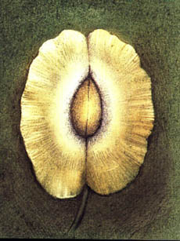

Asi pøed ètyøiceti lety jsem se vydal pì¹ky na dlouhé putování po kopcích, turistùm zcela neznámých, ve starobylém alpském kraji, který zasahuje a¾ do Provence.
Na jihovýchodì a na jihu, mezi Sisteronem a Mirabeau, lemuje kraj øeka Durance Na severu ho pak lemuje horní tok øeky Dromy, od jejího pramene a¾ po mìsteèko Die. Na západì jsou to roviny hrabství venaissinského a výbì¾ky hor Ventoux. Území zabírá celou èást kraje Nízkých Alp,

ji¾ní èást øeky Dromy a malý uzavøený úsek Vaucluse. Tehdy sem podnikl dlouhé putování v tamìj¹ích pustinách, holých a jednotvárných stepích, ve vý¹ce asi 1 200 a¾ 1 900 metrù. Rostla tam jen divoce levandule.Procházel jsem tím krajem, kde je nej¹ir¹í, a po tøech dnech putování jsem se dostal do neuvìøitelnì bezútì¹ných konèin. Utáboøil jsem se vedle rozvalin opu¹tìné vesnice. Vody jsem se nenapil u¾ od minulého dne a potøeboval jsem ji objevit. Polozboøené domy byly natìsnané jako staré vosí hnízdo. To mì pøivedlo na my¹lenku, ¾e tu kdysi jistì byla studánka nebo studna. Byla tam skuteènì studánka, ale vyschlá. Pìt nebo ¹est domù beze støech nièil vítr a dé¹». Zvonice kaplièky se zøítila. V¹echno stálo v øadì stejnì jako ve vesnicích, kde je ¾ivot, tady v¹ak v¹echen zmizel.
Byl horký èervnový den a slunce høálo. Ale zde, v konèinách vysoko polo¾ených a bez jakéhokoliv pøístøe¹í, fièel vítr nesnesitelnì prudce. Mruèel mezi zdmi domù jako ¹elma, kterou vyru¹ili, kdy¾ se krmila.
Musel jsem jít dál. ©el jsem u¾ pìt hodin a je¹tì jsem nena¹el vodu. A nic nedávalo nadìji, ¾e ji najdu. V¹echno bylo vyprahlé a v¹ude rostly jen drsné traviny.
Najednou se mi zdálo, ¾e v dálce vidím stát malou postavu. Myslel jsem, ¾e je to kmen osamoceného stromu. Jen tak nazdaøbùh jsem tam zamíøil. Byl to pastýø. Asi tøicet ovcí le¾elo kolem nìho na rozpálené pùdì a odpoèívalo.
Dal mi napít vody. Po chvíli mì zavedl do ovèína v zákrutu náhorní roviny. Tu znamenitou vodu èerpal z velice hlubokého pøirozeného zdroje. Nad ním postavil jednoduchý rumpál.